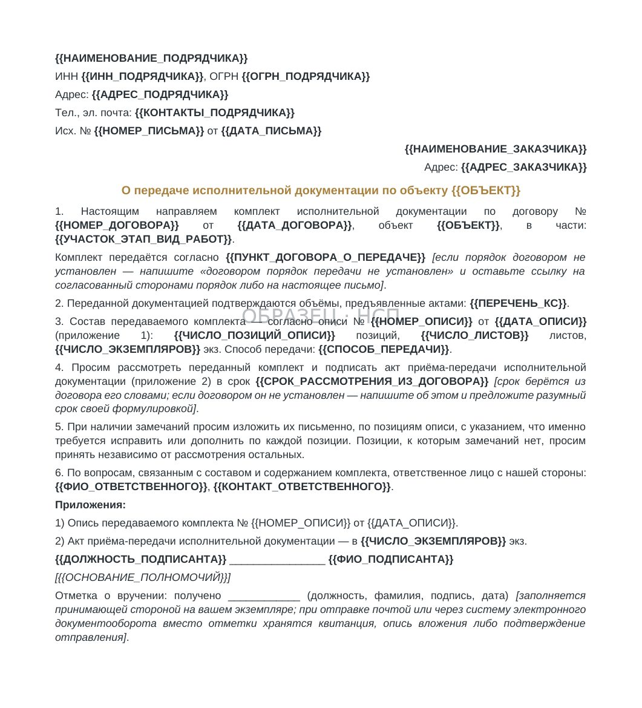

ИСПОЛНИТЕЛЬНАЯ ДОКУМЕНТАЦИЯ / ПЕРЕДАЧА КОМПЛЕКТА
Исполнительная документация в строительстве: состав, проверка и передача заказчику
Обновлено 10 ноября 2026
Как организовать подготовку исполнительной документации, выявить недостатки до приёмки, оформить передачу и подтвердить выполнение своих обязательств по договору.
Исполнительная документация сопровождает строительные работы на протяжении их выполнения. Она подтверждает фактическое исполнение проектных решений, результаты освидетельствований и испытаний, применённые материалы и характеристики выполненных конструкций.
При подготовке очередного комплекта КС-2 подрядчик может столкнуться с тем, что часть актов скрытых работ не подписана, исполнительные схемы не внесены в реестр, а паспорта материалов невозможно связать с конкретным участком. В результате заказчик направляет замечания, требуется повторная проверка и возникают разногласия по срокам сдачи.
Для подрядчика важно разделять три задачи: правильно вести документацию при производстве работ, проверить её комплектность и надлежащим образом передать предусмотренную договором часть заказчику. Каждая требует самостоятельного контроля и подтверждающих документов.
1. Какие требования регулируют исполнительную документацию
Обязанность ведения исполнительной документации при строительстве, реконструкции и капитальном ремонте объектов капитального строительства предусмотрена частями 1.4 и 1.5 статьи 52 Градостроительного кодекса РФ.
Состав и порядок её ведения определяет приказ Минстроя России от 16 мая 2023 года № 344/пр. При подготовке документов в 2026 году необходимо применять действующую редакцию, в том числе изменения, вступившие в силу 1 марта 2026 года.
Положения прежнего РД-11-02-2006 не следует использовать вместо действующего приказа № 344/пр при оформлении новых документов.
При этом перечень документов по конкретному объекту зависит также от проектной и рабочей документации, вида работ, применимых технических требований и положений договора.
Общий журнал работ имеет самостоятельное регулирование. Его ведение и используемую форму необходимо проверять с учётом приказа Минстроя России № 1026/пр, а не считать, что все журналы регулируются только приказом № 344/пр.
Практический результат: до начала комплектации ПТО должно определить применимые требования и сформировать перечень документов, необходимых именно для выполняемых работ.
2. Разграничьте ответственность генподрядчика и субподрядчика
На одном объекте исполнительную документацию могут формировать несколько организаций. При этом общий комплект объекта и комплект конкретного субподрядчика не тождественны.
Подрядчик, выполняющий отдельный раздел работ, обычно отвечает за документы, возникающие в ходе его собственного производства: предусмотренные акты освидетельствования, исполнительные схемы, документы на использованные материалы, результаты испытаний и относящиеся к его работам записи журналов.
Документы по объекту в целом формируются и систематизируются в порядке, определённом градостроительным законодательством, проектом, организационной схемой строительства и договорами между участниками.
Поэтому требование передать «всю исполнительную документацию по объекту» необходимо соотносить с конкретным предметом обязательств субподрядчика.
До начала работ желательно письменно согласовать:
- Перечень документов по каждому виду работ.
- Организацию, ответственную за оформление конкретного документа.
- Состав участников освидетельствований и полномочия подписантов.
- Порядок передачи исходных проектных данных и согласованных изменений.
- Адресата и формат передачи готового комплекта.
- Условия исправления замечаний и проведения повторной проверки.
Если соответствующий документ относится к работам другой организации, это необходимо отразить в матрице ответственности, указав ответственное лицо и основание распределения обязанностей.
3. Сформируйте реестр состава документации по объекту
Универсального перечня, одинаково подходящего для всех строительных объектов, нет. Для внутреннего контроля необходимо составить реестр, связанный с фактическими работами и применимыми требованиями.
В зависимости от объекта и раздела работ в него могут входить:
Организационные документы. Приказы о назначении ответственных лиц, сведения о полномочиях, согласованные перечни участников и иные документы, необходимые для выполнения и контроля соответствующих операций.
Журналы работ. Общий журнал, применимые специальные журналы и записи, фиксирующие последовательность строительства, предусмотренные проверки и выполнение технологических операций.
Акты освидетельствования. Документы по скрытым работам, ответственным конструкциям и участкам инженерных сетей — в тех случаях, когда соответствующее освидетельствование требуется.
Исполнительные схемы и геодезические документы. Фактические оси, отметки, размеры, положение конструкций и инженерных коммуникаций, которые необходимо сопоставить с проектными решениями.
Документы на материалы и оборудование. Паспорта, сертификаты, декларации, документы входного контроля и иные подтверждения применимых характеристик с привязкой к конкретным партиям и участкам.
Результаты испытаний. Протоколы, акты и другие документы по проведённым контрольным мероприятиям, если они предусмотрены требованиями к соответствующим работам.
Изменения документации. Согласованные изменения проектных и рабочих решений, необходимые для подтверждения фактического исполнения.
В реестре важно указывать не только факт наличия документа, но и его номер, дату, участок, ответственного, статус проверки, ссылку на файл и редакцию.
Такой учёт позволяет выявлять недостающие документы до формирования окончательной папки на сдачу.
4. Оформляйте документы непосредственно в ходе работ
Исполнительная документация должна отражать реальные обстоятельства строительства. Если к её подготовке приступают только после завершения этапа, часть сведений приходится восстанавливать по переписке и объяснениям производственного участка.
Наиболее существенные риски возникают при выполнении работ, результат которых впоследствии будет скрыт следующими конструкциями или технологическими операциями.
До закрытия скрытых работ необходимо обеспечить предусмотренное освидетельствование, оформить соответствующий акт и проверить состав обязательных приложений.
Фотографии и записи в журнале могут дополнять доказательства, но не всегда заменяют установленную процедуру освидетельствования.
При подготовке акта важно сверить наименование, место и даты выполнения работ, номера проектных листов, сведения о применённых материалах, документы-основания и полномочия участников.
В комплекте НСП нормативный PDF-образец и редактируемая рабочая форма акта представлены раздельно. Рабочую форму необходимо адаптировать к требованиям конкретного объекта, а не считать её автоматически равнозначной нормативному образцу.
Подробнее о назначении и оформлении документа — «Акт скрытых работ: образец, состав и распространённые ошибки».
5. Проверяйте взаимосвязь документов
Наличие отдельного акта или исполнительной схемы ещё не означает, что документация по соответствующему объёму готова к сдаче.
Проверке подлежит связь между документами:
- Акт освидетельствования соответствует конкретному виду и месту работ.
- В проектном листе можно определить предъявленное конструктивное решение.
- Исполнительная схема отображает фактическое положение конструкции или сети.
- Документы на материалы позволяют установить, какие партии использованы.
- Журналы и результаты испытаний не противоречат датам и последовательности выполнения работ.
- Наименования и количество работ соотносятся с предъявляемыми актами и договорными объёмами.
Особое внимание следует уделять изменениям проекта, замене материалов и корректировкам технологии. Фактическое выполнение по изменённому решению должно подтверждаться надлежащими согласованиями.
Полезно вести единый реестр исполнительной документации, в котором каждый документ имеет определённый статус: подготовлен, на проверке, с замечаниями, подписан или передан.

6. Проводите периодическую проверку комплектности
Не следует ждать окончательной сдачи этапа для выявления отсутствующих документов.
Контроль ПТО целесообразно проводить по мере выполнения работ, а в конце отчётного периода — формировать отдельную сводку незакрытых вопросов.
Во время проверки необходимо установить:
- Какие работы выполнены и предъявляются к приёмке.
- Какие документы по этим работам уже оформлены.
- Где отсутствуют подписи, исполнительные схемы, результаты испытаний или документы на материалы.
- Какие документы требуют корректировки из-за изменений проектных решений.
- Какие замечания находятся у конкретных ответственных лиц.
- Какие документы можно включать в передаваемый комплект без дополнительных согласований.
Результат рекомендуется оформлять контрольным листом или протоколом проверки с указанием ответственных и сроков устранения.
Это позволяет отделить фактически отсутствующий документ от документа, который оформлен, но ещё не передан для подписания.
7. Организуйте работу с замечаниями заказчика
Замечания к исполнительной документации следует фиксировать в едином реестре, не ограничиваясь сообщениями в рабочих чатах.
Для каждого замечания важно определить источник, документ, содержание расхождения, ответственного за устранение, срок, подтверждение исправления и текущий статус.
Возможны разные основания для возврата:
Недостаток оформления. Ошибка в реквизитах, подписи, нумерации, приложении или оформлении файла.
Недостаток подтверждения работ. Отсутствует предусмотренная схема, результат испытания или иной документ, без которого невозможно проверить выполнение.
Разногласие по составу. Заказчик требует материал, относящийся к другому разделу или не предусмотренный применимыми обязательствами подрядчика.
Необходимость корректировки проектного решения. Фактические работы отличаются от исходной документации, и прежде чем исправлять акт, требуется оформить надлежащее техническое основание.
На каждое замечание необходим документированный результат: исправлено, принято к исполнению, передано на согласование либо отклонено с мотивированным обоснованием.
После устранения замечаний следует сохранить предшествующую редакцию документа и передать уточнённую версию с сопроводительным письмом. Не следует оформлять документы фиктивными датами.
При повторной проверке удобно использовать реестр замечаний и график их устранения. Это позволяет видеть, какие вопросы закрыты, а какие продолжают препятствовать передаче комплекта.

8. Подготовьте опись передаваемого комплекта
Передача исполнительной документации — отдельный этап работы. Важно подтвердить не только отправку письма, но и какие именно документы были переданы.
Для этого подготавливается опись, в которой указываются наименование документа, номер, дата, количество листов или экземпляров, версия, принадлежность к конкретным работам и другие необходимые реквизиты.
Перед отправкой следует сверить:
- Опись с фактическим составом бумажного либо электронного комплекта.
- Номера и даты документов с самими файлами.
- Количество листов и экземпляров.
- Наличие подписей, если они необходимы.
- Ссылки на соответствующие акты выполненных работ.
- Отсутствие пропущенных позиций и дублирования.
В комплекте P4 предусмотрена Excel-опись передаваемой ИД на 120 рабочих строк, с подсчётом количества позиций и листов и контрольными полями для выявления пропусков.
Сама по себе заполненная опись не подтверждает приёмку документации заказчиком: факт передачи необходимо оформить отдельно.

9. Направьте комплект и сохраните подтверждение получения
Способ передачи определяется договором и согласованным порядком взаимодействия сторон. Он может предусматривать бумажный комплект, электронный документооборот либо передачу через предусмотренную информационную систему.
К комплекту целесообразно приложить сопроводительное письмо с указанием договора, объекта, периода, номера описи и просьбой подтвердить получение или направить конкретные замечания.
Подтверждением передачи могут служить подписанный акт, отметка на экземпляре описи, электронная квитанция, реестр отправления или иные доказательства, подходящие к предусмотренному договором способу передачи.

Если получатель отказывается принимать документы, необходимо зафиксировать обстоятельства отказа и направить комплект способом, позволяющим подтвердить его содержание и доставку.
При отсутствии ответа следует проверить договорный срок рассмотрения, полномочия адресата и доказательства фактического направления.
Отсутствие подписанного акта передачи не всегда означает, что документация юридически не была направлена. Значение имеет совокупность доказательств и согласованный порядок юридически значимых сообщений.
10. Как исполнительная документация связана с КС-2 и оплатой
Передача исполнительной документации и сдача выполненных работ — взаимосвязанные, но не полностью совпадающие обязательства.
Поэтому необходимо отдельно определить:
Условия приёмки. Какие документы предусмотрены договором для сдачи конкретного этапа или результата работ.
Условия оплаты. С какого события начинает исчисляться срок денежного обязательства: подписание акта, завершение предусмотренной приёмки, передача определённой документации или другое согласованное обстоятельство.
Характер замечаний. Касаются ли они фактически выполненного объёма, качества работ, обязательных подтверждающих документов либо только отдельных недостатков оформления.
Возможность расчётов по принятой части. Если часть работ не оспаривается, следует рассмотреть договорные основания её отдельной приёмки и оплаты.
Сама по себе ссылка заказчика на недостатки исполнительной документации не подтверждает автоматически законность удержания всей суммы выполненных работ. Оценка зависит от содержания договора, характера недостатков, их влияния на приёмку и применимых норм.
Статья 746 ГК РФ регулирует оплату работ по строительному подряду с учётом сметы, сроков и порядка расчётов, установленных законом или договором.
Практический маршрут проверки расчётных документов приведён в статье «Проверка КС-2 и КС-3 перед сдачей». При наступившей просрочке оплаты используется отдельный порядок предъявления требований к заказчику.
11. Рабочая последовательность для ПТО
При организации документационного сопровождения строительного объекта целесообразно установить следующую последовательность.
До начала работ: определить состав ИД, согласовать границы ответственности, назначить исполнителей, создать реестр и проверить используемые формы.
Во время производства: оформлять предусмотренные акты, журналы, схемы, результаты испытаний и документы на материалы непосредственно по факту выполнения соответствующих операций.
В конце отчётного периода: сопоставлять предъявляемые объёмы с исполнительной документацией, контролировать полноту и устранять выявленные расхождения.
Перед передачей: провести внутреннюю проверку, закрыть замечания, сформировать опись и сопроводительное письмо.
При передаче заказчику: зафиксировать конкретный состав комплекта и получить доказательство надлежащего направления или вручения.
После передачи: вести учёт полученных замечаний, исправлений, повторных отправок и итогового статуса приёмки.
Эта последовательность позволяет установить ответственность за документы и восстановить хронологию в случае разногласий с заказчиком.
12. Документы для ведения и передачи исполнительной документации
В линейке «На стороне подрядчика» представлен комплект «Исполнительная документация: ведение, проверка и передача».
В действующей поставке 30 файлов: 16 Word, 7 Excel и 7 PDF. В состав входят рабочие формы и нормативные материалы, реестры ИД и паспортов, учёт замечаний, контрольные листы, документы по передаче комплекта, Excel-опись на 120 строк, сопроводительное письмо и инструкция.
Стоимость — 24 900 ₽. Документы предназначены для организации работы ПТО и оформления конкретных обстоятельств по объекту. Применимость форм, реквизиты и круг подписантов необходимо проверять по требованиям объекта, договору и действующим нормативным актам.
Главный вывод
Подготовка исполнительной документации должна быть организована одновременно с производством строительных работ, а не после завершения этапа.
Для сдачи важно подтвердить четыре результата: необходимые документы сформированы, сведения согласованы между собой, замечания проверены и устранены, состав переданного комплекта и дата его получения зафиксированы.
Такая организация снижает риск повторных возвратов и помогает подрядчику обосновывать соблюдение своих обязательств при приёмке и расчётах.
КОМПЛЕКТ P4 / 30 ФАЙЛОВ
Исполнительная документация: ведение, проверка и передача
Нормативные PDF-образцы и рабочие формы, реестры ИД и замечаний, Excel-опись на 120 строк, сопроводительное письмо, акты передачи и инструкции. 16 Word, 7 Excel и 7 PDF.
24 900 ₽
Посмотреть состав комплекта P4БЕСПЛАТНО, ЗА EMAIL
Исполнительная документация: проверка комплекта до передачи
Состав комплекта — половина дела; вторая половина в том, чтобы его приняли с первого раза. Восемь групп комплекта, пять связей, на которых ломается проверка, и реестр сверки позиций КС-2 с подтверждающими документами — бесплатно.
- Проверочный лист комплекта ИД
- Реестр сверки: КС-2 против комплекта
- Девять причин возврата комплекта
- Запрос о порядке передачи документации
- Что делать дальше
Читайте также
- Акт передачи строительной площадки: с него начинается срок и первая запись в журнале
- Акт скрытых работ: образец, состав и ошибки, из-за которых его возвращают
- Акт освидетельствования скрытых работ: подписанты, приложения и связь с журналом
- Какие работы считаются скрытыми и когда акт обязателен
- Акт скрытых работ на монтаж инженерных систем
- Подписанная КС-2 не значит, что вам заплатят